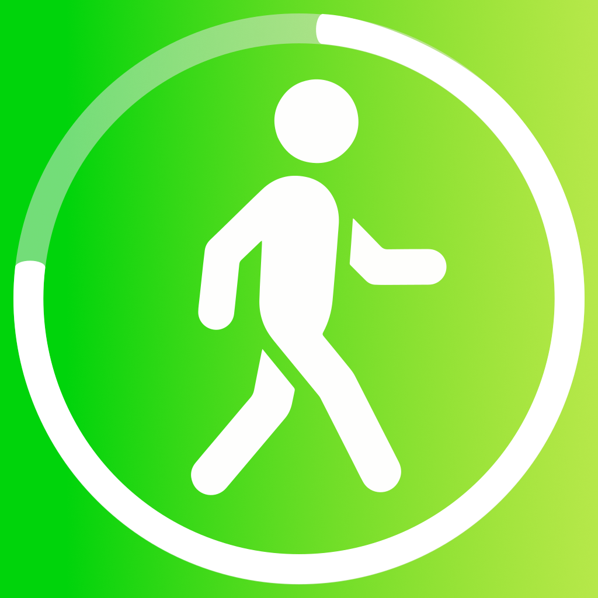

Last updated: May 2026
StepMeter does not collect, transmit, or share any personal data. All data stays on your device.
StepMeter does not collect any personal information. The app stores the following data locally on your device only:
StepMeter requests access to Apple Health (HealthKit) to read your step count and walking distance. This data is only read locally and is never transmitted off your device.
The app uses your device's motion sensor (CoreMotion) to count steps when HealthKit is unavailable. No motion data is stored beyond the current session count.
StepMeter requests "While Using the App" location access only when you start a GPS walk session. Location data is:
StepMeter does not use any third-party analytics, advertising, or tracking SDKs. There are no in-app purchases, accounts, or servers.
All data is stored in your device's local UserDefaults storage. Deleting the app permanently removes all stored data. You can also clear your data at any time via Settings → Data Settings → Clear All History.
StepMeter does not knowingly collect data from anyone. Since no data leaves the device, there are no age-based restrictions on data handling.
If this policy changes, the updated version will be posted at this URL with a new "Last updated" date. Significant changes will also be noted in the App Store release notes.
Questions about this policy? Reach out at justintas@gmail.com